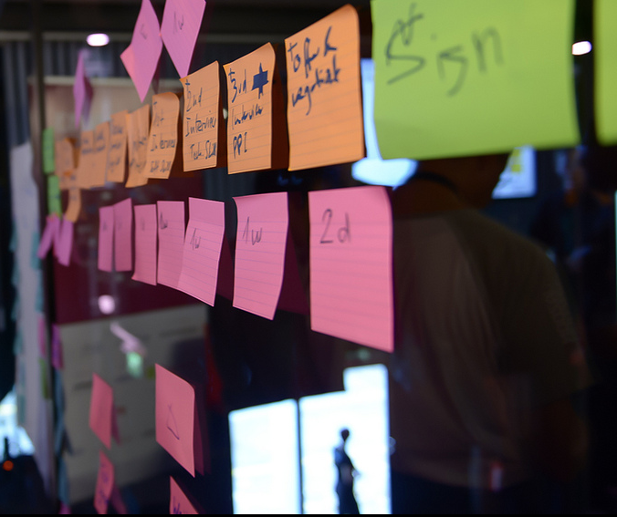
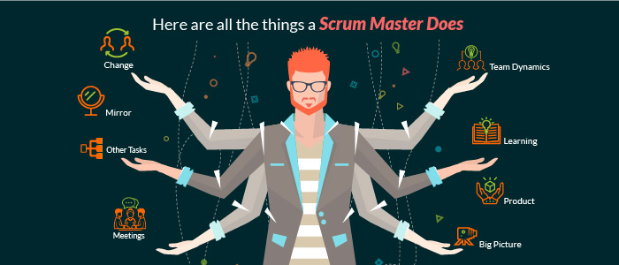

The Scrum Master
Scrum boards and why your team should be using one
by Kevin Kuhn

When it comes to planning there no better tool than a Scrum board. A Scrum board is meant to
visually display the progress of the team during their sprint. It presents a visual snapshot of the backlog
which allows everyone to view the tasks that still need to be started.
The board is usually divided into columns. These columns are then listed under a label such as
(stories, not started, in progress and done) these labels help with organization and progress tracking. As
the tasks are completed, they move from the left side of the board to the right side until they are
finished. The board is also a great tool to use during a sprint meeting by providing an at-glance reference
and a daily reminder of the sprint goal and the and the work in which the team needs to complete. This
helps the team maintain sense of momentum since the team can visually see the work being completed.
The board benefits the team in many ways, for example it helps with collaboration and
conversation as well as transparency. The board promotes more human interaction when it comes to
agile meetings. The Scrum board also helps with transparency because it communicates the status in
which the project is at. The Scrum board can also make a project more interesting and fun! Team
members can customize the board by using different color sticky notes or printing off avatars for each
team member on the project.
I’m not saying that a Scrum board isn’t necessary, after all Scrums are meant to adapt to the
framework to whatever works best for the team. The main point I’m trying to make is that the board can
pay a vita role in the Scrum. A virtual board just doesn’t have the same advantages as what a physical
board has. Next time you’re working on a project think about using a Scrum board, it could be the best
thing you’ve done for the project.٭
Citations:
The Certified Scrum Master
by Jason Jansen

While just about anyone with experience leading an Agile team can be considered a Scrum Master, it doesn’t hurt to look into ways to improve and mark your abilities. The “Certified ScrumMaster (CSM)” is a certification that teaches, tests and proves that someone is capable of working within the standards and compliance of typical Scrum practices (Larson). Such a certificate can be a resume builder, but in all, is meant to help round a Scrum master’s skills.
Here are the various steps to the process:
“
- Familiarize yourself with Scrum and complete the pre-requisites for attending a CSM course.
- Attend an in-person CSM course taught by a Certified Scrum Trainer.
- Pass the CSM exam by correctly answering at least 24 of 35 questions.
This is a fairly straightforward process. It, like many other certificates, follows a learn, examine and, if passing, reward with the certification. Before taking the course, there are a few prerequisites to the course. “Before attending a CSM course, it’s necessary to properly prepare by fully familiarizing yourself with Scrum theory and principles.” (Larson). It is important, that a student should first ensure that they have a t least a small working knowledge of that it is to be a Scrum master before beginning. THere then exists a pretest, to ensure that you are prepared to begin the course at all (Larson). From there, you take the course, “ Scrum Foundations eLearning Series, a series of videos that introduces you to Scrum Theory, Scrum Roles, Scrum Events, and Scrum Artifacts” (Larson). If all goes well, you will have your certification in no time. Unlike standard college courses, the Scrum master course is taught online, and within a far smaller time frame than traditional classes.٭
Citations:
Scrum Master/Team Relationship
by Laiken Cleary
The relationship between a scrum master and their team is vital to a project’s success. To break down
the steps to success lets start at the top. What is scrum? Scrum is an agile development program with
easy organization, quick access, rapid changes and accordance with team and leader principles. Who is
the scrum master? A leader that facilitates the development of an agile project.
Some components to an agile project and a scrum master/team are the stand-up meeting that take
place. It is a simplistic meeting that just touches base with where team members are at and reviewing as
a team the overall progress. These meetings help define the relationship and style of a scrum master
and their team. Typically, a scrum master should be very hands off in these meetings. Only asking the
questions to ensure flow of the meeting. It is the team members that should be doing all the talking.
Stand-up meetings are for progress not feedback, allowing team members to speak allows for
opportunity and the scrum master should save feedback, comments, and concerns for individual team
member in a one-on-one setting.
Scrum master can sound scary for majority believe that they are the project leader. This is not true. A
scrum master is not in charge of the project results or outcomes. It takes a team to complete the project
thus it is a team accountable for results. Scrum masters help the team move through the stages of the
project, but it’s the team’s responsibility to advance.
Team building is very necessary from the beginning to build a relationship between the team and the
scrum master. Team building activities should be held frequency so that the team stays positive and
connected. Building techniques can be major conferences and trips or simple functions that allow
learning one another dynamic. Its necessary for the whole team to learn one another’s work ethic, and
style. This foundation ensure understanding.
Respect. Without respect the whole project will be terrible. Having respect for other people and the
work they are doing ensures that attitudes and results are good. If a scrum master respects their team
and the team has respect for the scrum master an agile project will be completed easily and well.٭
Citations:
What is a Scrum Master
by Connor Davidson
A scrum master is responsible for promoting and supporting Scrum. Scrum masters do this by helping everyone undertand the theory behind scrum and the pracices, rules, and values of scrum. (scrum.org). the Scrum master can help those outside the scrum team understand and interact with the team more efficiently by telling them which of their interactions are helpful and which aren’t. If somebody wanted to become a scrum master, they can take a course called the Professional Scrum Master (PSM) course. The PSM course takes two days and its students learn how to use scrum to optimize the value, productivity, and the total cost of ownership of a company’s software (scrum.org). During daily meetings, called Scrum meetings, the scrum master will ask three questions: “What did you do yesterday?”, “What will you do today?”, and “are there any impediments in your way?” (Rouse). Although the scrum master has an important role, they are not the same as the project leader or manager and they are not responsible or held accountable for the outcomes of the project (Rouse). Not having to take responsibility for the end product will take some pressure off of a scrum master. The scrum master is responsible for assisting the team in reaching an agreed upon consensus for what can be achieved in a specific time line, assisting them reach a general consensus during the daily scrum meeting, and helping to remove obstacles that are holding the teams back from making progress toward their goals (Rouse).٭
Citations: